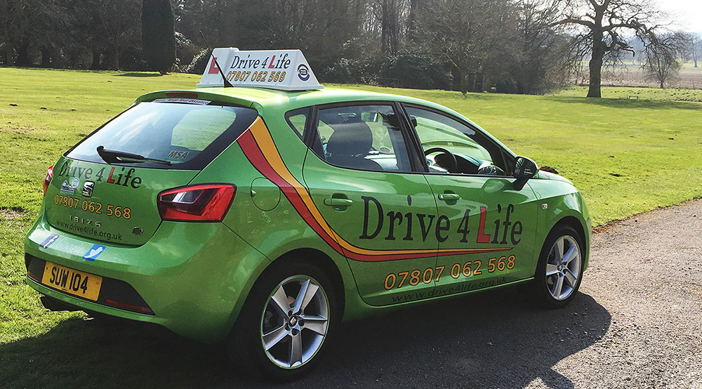

About Drive4Life
DRIVE4LIFE is South Manchester and Macclesfield's fresh and enthusiastic Independent Driving School offering Patient, Friendly and Professional Driving Tuition by a Fully Qualified FEMALE Instructor.
At D4L I understand many people are nervous about learning to drive, it should be an enjoyable experience that you look forward to. That is why I provide a calm, reassuring and positive environment in which to learn. After all, when you are having fun it's easier to learn!
About Me
I am a highly qualified DVSA Approved Driving Instructor and I tailor your lessons to suit your individual needs. This helps to develop your confidence and driving skills, which makes you a safe and competent driver. You will receive your own personal booklet to record your ongoing progress, which will be filled in every lesson so you can see your skills developing.
I take pride in the service I offer my pupils and I'm very proud of my excellent Pass Rate. This is why so many of my ongoing pupils and passed pupils recommend me to their friends and family.
Sue Walker

I have external video cameras which allows me to review driving situations during driving lessons, by playing back footage on my iPad. I give a personalised Progress Record booklet, which I update after every lesson and also have the knowledge of how the examiner says things, and how they mark the test report sheet, due to sitting in on most of my pupils tests. My car is always clean, tidy and well maintained: it is a Seat Ibiza FR, in a vibrant bright Green, and includes all the extras!
I also have a Theory Test Pro account, which all my learners can use to help you pass!
Drive 4 Life is an L of a way 2 Pass Accredited Instructor
By using a range of proven specialist techniques, specially adapted for learner drivers, your Accredited Driving Instructor will tailor the lesson to your specific learning style, enabling you to take on board information much more easily. The benefit is that you will become a safer, more competent driver, and take your test feeling calm and relaxed, stress free, and confident in your ability.
If you have dyslexia or dyspraxia your instructor will understand the particular issues that you may face when learning to drive, such as short term memory difficulties and sequencing problems, and will also understand how frustrating this can be for you. The specialist techniques will combat these issues and also deal with any negative emotions that may hold you back, such as frustration, anxiety, lack of self-confidence etc.
Please feel free to contact me to discuss this further.
The Car
At Drive4Life I use a vibrant, modern Seat Ibiza FR, 1.2cc, my fourth 'Green Machine'. It's extremely comfortable, reliable and well equipped- perfect for a positive and comfortable learning experience.
